选择理由
正文代表工作：核对规则混合精度布局与昇腾算子粒度能否一致，并计入反量化成本。
截至10月8日，整合3条热点资讯、9条本月核对的产业记录；按技术地图选取5篇正文代表论文、5篇附录补充论文，另3篇保留网页文字。先核对事实，再比较路线，最后给出昇腾研究建议；未进行昇腾实测。
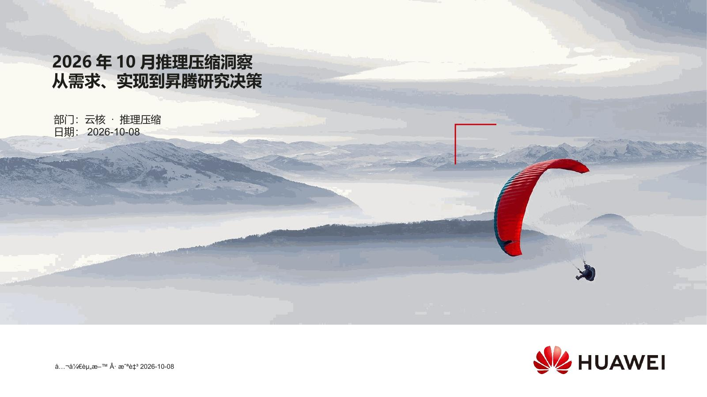
slide-01 · 打开原图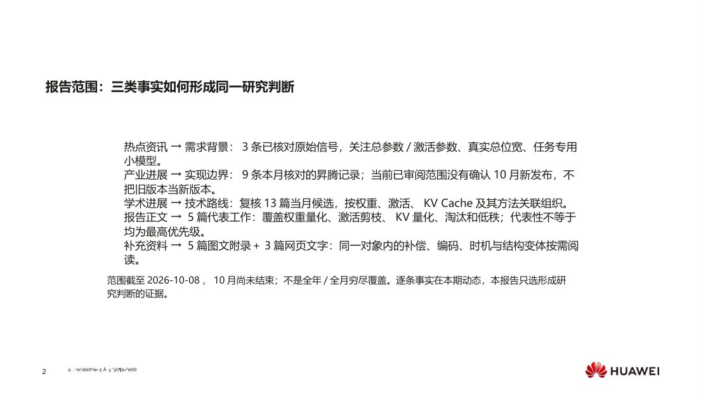
slide-02 · 打开原图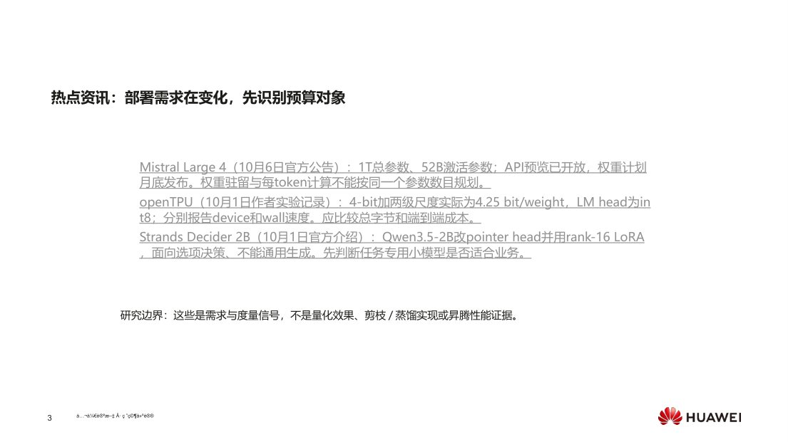
slide-03 · 打开原图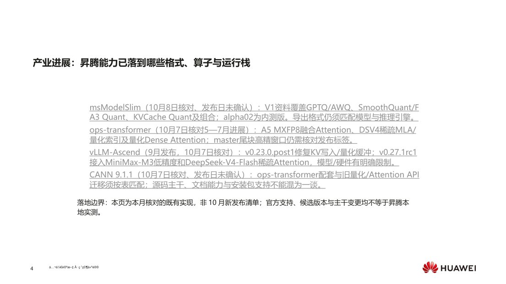
slide-04 · 打开原图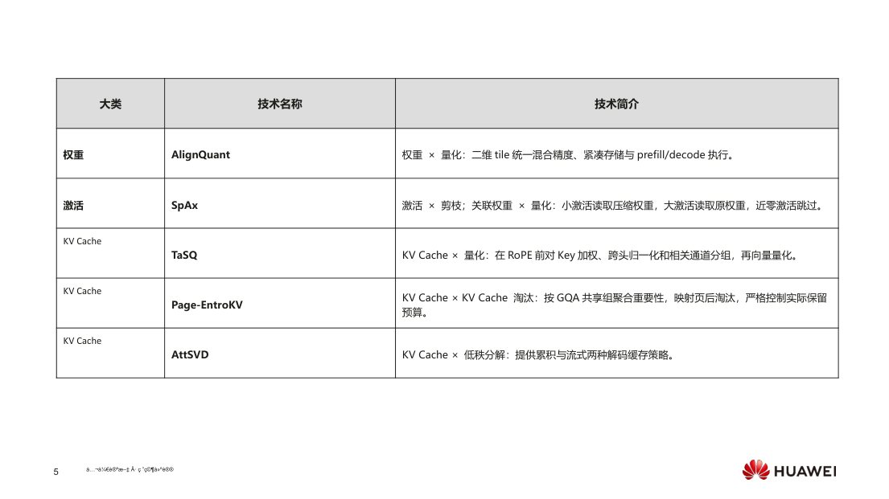
slide-05 · 打开原图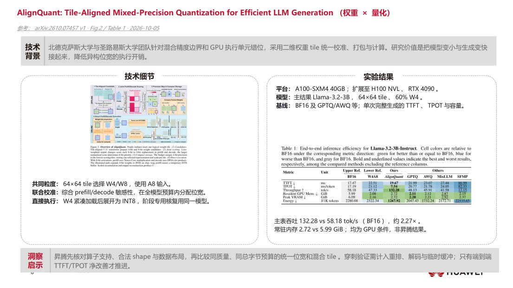
slide-06 · 打开原图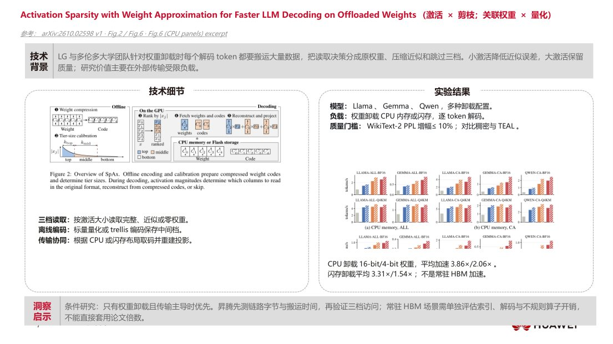
slide-07 · 打开原图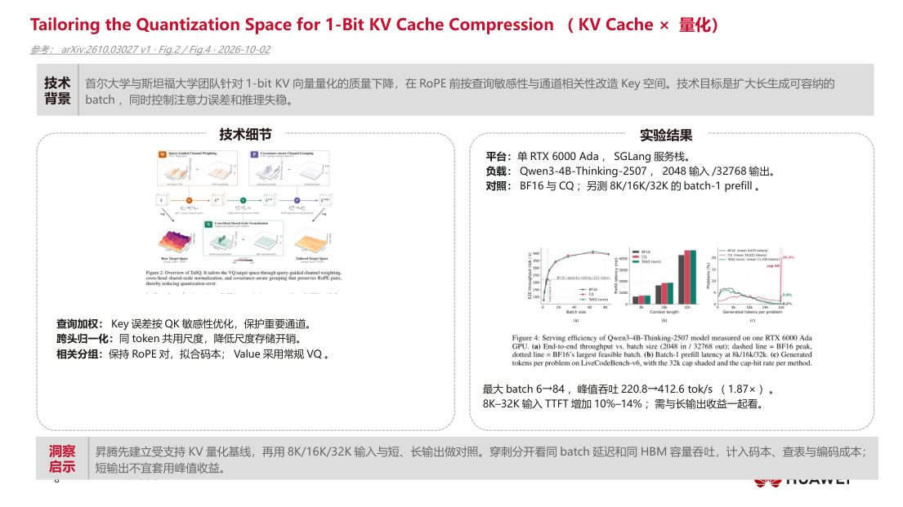
slide-08 · 打开原图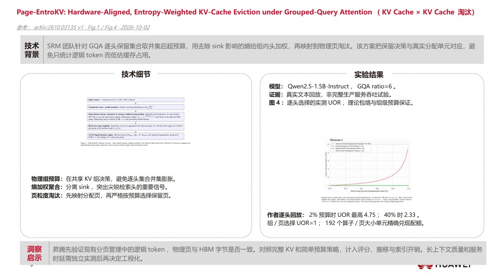
slide-09 · 打开原图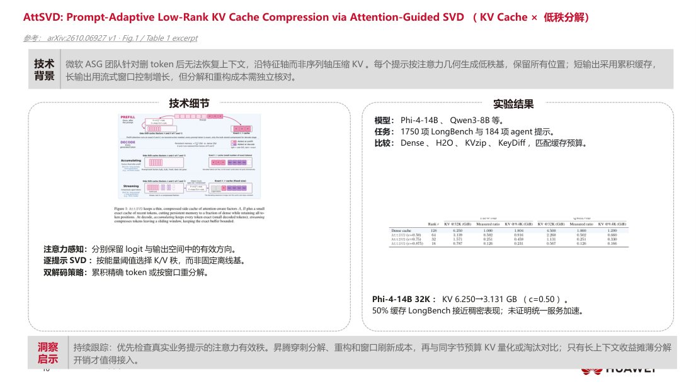
slide-10 · 打开原图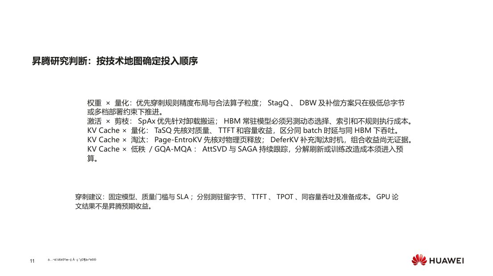
slide-11 · 打开原图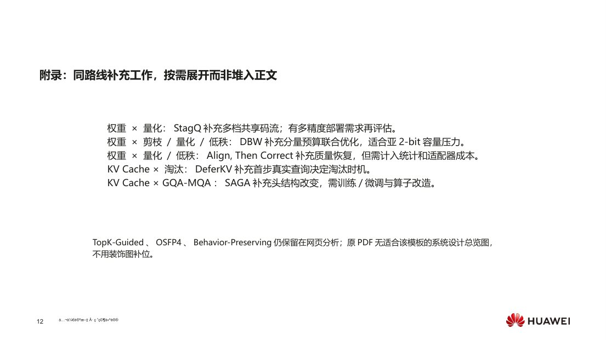
slide-12 · 打开原图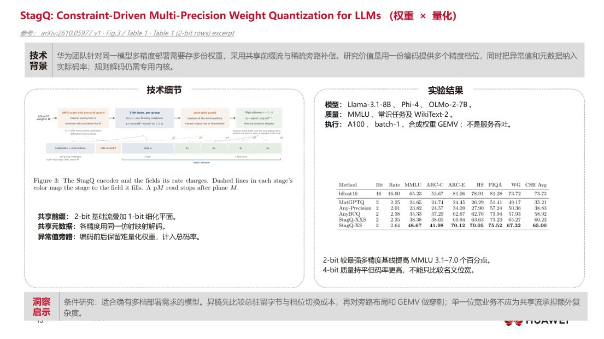
slide-13 · 打开原图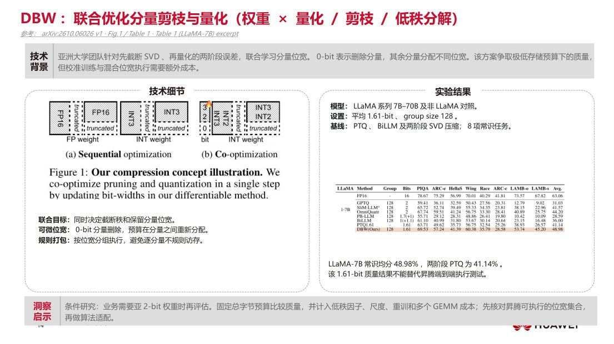
slide-14 · 打开原图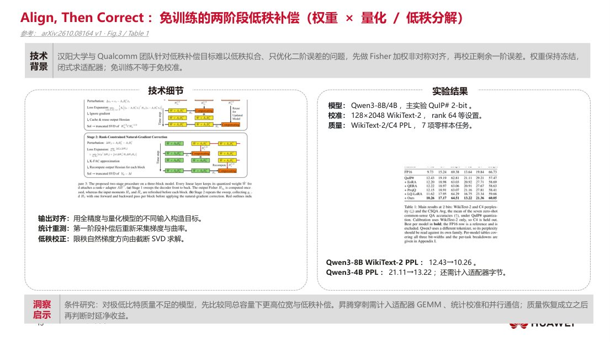
slide-15 · 打开原图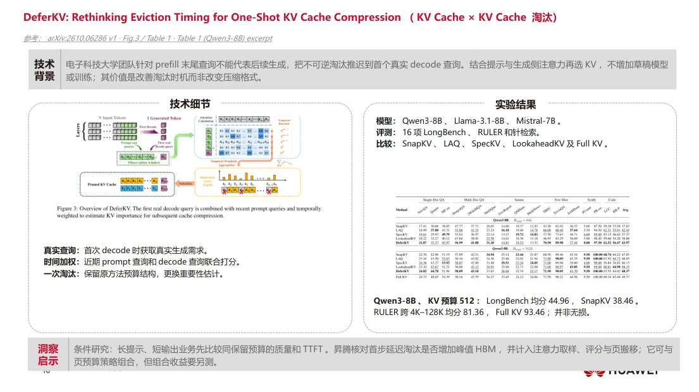
slide-16 · 打开原图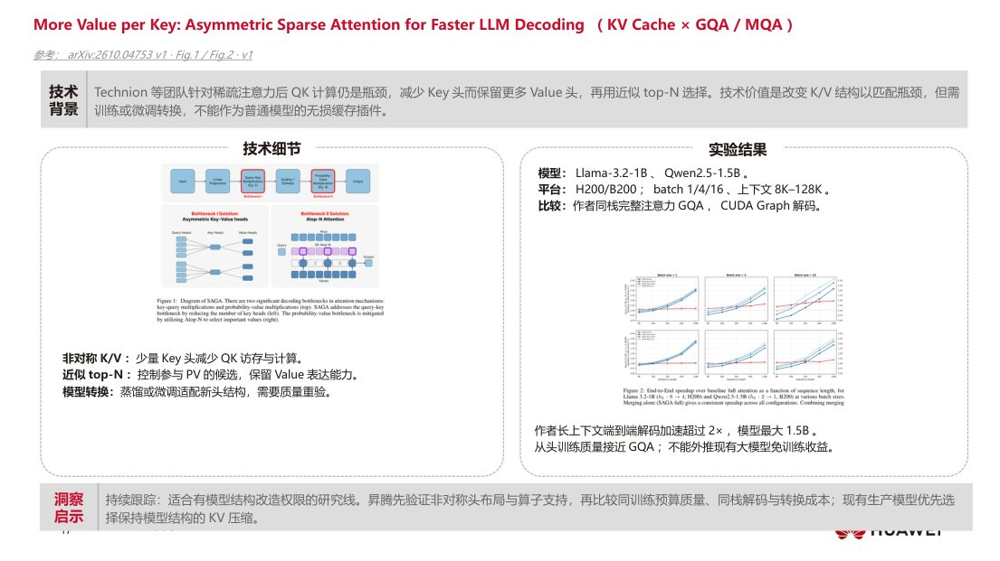
slide-17 · 打开原图 slide-18 · 打开原图
slide-18 · 打开原图正文代表工作：核对规则混合精度布局与昇腾算子粒度能否一致，并计入反量化成本。
正文代表工作：仅在权重卸载搬运是瓶颈时优先，不能外推到HBM常驻模型。
正文代表工作：长生成容量受限时评估查询敏感KV码本，同时核对质量与TTFT。
正文代表工作：优先检查逻辑Token预算能否兑现为物理页回收；回放结果不是服务吞吐。
正文代表工作：提示相关低秩压缩需核对分解与重构成本；缓存减半不等于加速。
附录补充工作：适合多精度部署预算；须验证前缀码流是否有实际执行收益。
附录补充工作：适合极低总字节预算；把校准优化与恢复成本纳入比较。
附录补充工作：评估量化后低秩恢复的质量收益及旁路矩阵执行代价。
附录补充工作：比较延迟到首步解码再驱逐的质量及首词代价。
附录补充工作：头布局改造和恢复训练成本较高；图文版使用已复核v1原图。
网页文字保留：保留网页分析；原PDF缺少适合该模板的系统设计总览图，不以装饰图补位。
网页文字保留：保留网页分析；原PDF缺少适合该模板的系统设计总览图，NVFP4结果仍作为事实依据。
网页文字保留：保留网页分析；原PDF缺少适合该模板的系统设计总览图，KL评分仍纳入路线比较。